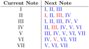
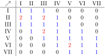

Bonus content: A Musical Interlude
This part is optional
This part is considered to be bonus content. It contains some more advanced topics that are not covered in the main course. It can also give some examples of functions and topics that are introuced later in the course. There are no exercises related to this content.
Feel free to skim or skip this section for now, and return to it later!
In addition to a linear progression of ideas, this course will have several projects that showcase features of the language in a non-linear order. These projects will use ideas or operations that might not have been covered yet, so brief explanations will be given, anticipating more complete explanations in later chapters.
In this project, we will use basic music theory to algorithmically generate melodies entirely in APL.
The Theoretical Minimum
For most people, the sensation of sound is mediated through the ears. The ears achieve this by allowing vibrations in the air to produce waves in the fluids of the inner ear, stimulating the inner ear hair cells whose signals are eventually processed by the brain.
The pitch of a sound is the frequency of this vibration. "Notes" distinguish sounds by their pitch. In western music, the standard convention is to consider pitches whose ratio is a power of 2 as equivalent notes, this is called "octave equivalence". Equivalent notes with higher or lower pitch are said to be an "octave" above or below the note, for reasons that will be made clear.
The pitch of a sound is the frequency of this vibration. "Notes" distinguish sounds by their pitch. In western music, the standard convention is to consider pitches whose ratio is a power of 2 as equivalent notes, this is called "octave equivalence". Equivalent notes with higher or lower pitch are said to be an "octave" above or below the note, for reasons that will be made clear.
⍝ For example, between the pitches 440Hz and 880Hz,
⌊440×(2*(⍳11)÷12)
466 493 523 554 587 622 659 698 739 783 830
⍝ ⌊ Floor of
⍝ 440× 440 times
⍝ 2* 2 to the power of
⍝ (⍳11)÷12 the numbers 1,2,3,...,11 divided by 12
Notes are labelled using the seven letters A through G, with sharps (♯) and flats (♭) to signify the notes in-between by raising or lowering pitch, with redundancy. There are eight letters from A through G back to A, justifying the use of the word "octave". Starting from C, the twelve notes are C, C♯ or D♭, D, D♯ or E♭, E, F, F♯ or G♭, G, G♯ or A♭, A, A♯ or B♭, and B.
A musical scale is a certain selection of these notes, usually spanning an octave. In our case, we will restrict ourselves to using the C major scale, the notes C, D, E, F, G, A, B. The notes of a major scale are usually referred to using an ordinal number from 1st through 7th, or by roman numerals I, II, III, IV, V, VI, VII.
A musical scale is a certain selection of these notes, usually spanning an octave. In our case, we will restrict ourselves to using the C major scale, the notes C, D, E, F, G, A, B. The notes of a major scale are usually referred to using an ordinal number from 1st through 7th, or by roman numerals I, II, III, IV, V, VI, VII.
Implementation
From the above discussion, the problem is now clear. Given some starting note, we want to generate movements between the notes with some preference for certain special movements.

In the table above, red numerals represent a preferred following note. For example, we want VI to resolve to a V more frequently than to move to a VII or down to a IV . Note that the next note depends only on the previous note, so we can represent this data as a graph.

Then, the data is a list of triples, consisting of the starting note, the ending note, and the color (or, priority) of the arrow between those notes. We can lay out this data in the form of a table as follows, where the row represents the starting note and the column represents the ending note. For example, the first row says that, for I as the starting note, we can get to I itself, II, or III with equal preference, 1 1 1.

We use 1 for standard movements and 2 for preferred movements. Let’s write try to create this matrix in APL using the reshape ⍴ operator, remembering that if the right argument is not long enough, it will repeat it to fill the required dimensions.
M ← 7 7 ⍴ 1 1 1 0 0 0 0
M
1 1 1 0 0 0 0
1 1 1 0 0 0 0
1 1 1 0 0 0 0
1 1 1 0 0 0 0
1 1 1 0 0 0 0
1 1 1 0 0 0 0
1 1 1 0 0 0 0
⍝ Not quite
M ← 7 7 ⍴ 1 1 1 0 0 0 0 0
M
1 1 1 0 0 0 0
0 1 1 1 0 0 0
0 0 1 1 1 0 0
0 0 0 1 1 1 0
0 0 0 0 1 1 1
0 0 0 0 0 1 1
1 0 0 0 0 0 1
⍝ Closer
M ← 7 7 ⍴ 1 1 0 0 0 0 0 1
M
1 1 0 0 0 0 0
1 1 1 0 0 0 0
0 1 1 1 0 0 0
0 0 1 1 1 0 0
0 0 0 1 1 1 0
0 0 0 0 1 1 1
0 0 0 0 0 1 1
⍝ Getting there
M ← 7 7 ⍴ 1 1 1 0 0 0 1 1
M
1 1 1 0 0 0 1
1 1 1 1 0 0 0
1 1 1 1 1 0 0
0 1 1 1 1 1 0
0 0 1 1 1 1 1
0 0 0 1 1 1 1
1 0 0 0 1 1 1
⍝ Almost exactly what we want
Our melodies here are restricted to one octave. If we allowed a wider range, we would allow the 7th to go to the 1st of the next octave and vice versa.
M[7;1]←0
M[1;7]←0
M[6;5]←2
M[4;3]←2
M[2;1]←2
M[2;3]←2
M
1 1 1 0 0 0 0
2 1 2 1 0 0 0
1 1 1 1 1 0 0
0 1 2 1 1 1 0
0 0 1 1 1 1 1
0 0 0 1 2 1 1
0 0 0 0 1 1 1
⍝ Perfect
The next step is to figure out, given a note, what the next possible notes are. This is very easily done using the matrix multiplication +.× operator. This operator is actually the inner product operator . applied to the functions + and ×, see [Inner and Outer product section]. Represent a note with scale degree N as a vector with a 1 in the Nth slot, and 0 otherwise, then matrix multiplication with M represents picking out the Nth row, which as we mentioned above corresponds to selecting the edges in the graph where N is the starting note.
Recall that ⍳7 is 1 2 3 4 5 6 7, this is equivalent to 2=1 2 3 4 5 6 7
The subsequence notes are I (Preferred), II, III (Preferred), and IV
II ← 2=⍳7
II
0 1 0 0 0 0 0
II+.×M
2 1 2 1 0 0 0
Using this, we want to decide on a movement to another note, weighed by priority. One easy way to achieve this is using the roll ? function, which simulates the rolling of a dice with faces numbering 1 to the right argument. We will roll one die from 1 to 10, or 20 for preferred movements, for every possible following note, and pick the largest result.
The subsequent notes are I, II, III, and IV
Multiplying by 10 to prepare to roll dice with 10, or 20, faces
Notice that ? 0 returns a random real number between 0 and 1
The Grade Down operator ⍒ returns the indices of the elements of the list from largest to smallest
Getting the index of the largest roll.
This is III.
N←II+.×M
N
2 1 2 1 0 0 0
N×←10
N
20 10 20 10 0 0 0
NR←?N
NR
3 8 13 0.9740484038 0.3581395503 0.5245918312
⍒ 100 200 0.1 1
2 1 4 3
⍒ NR
3 2 1 4 6 5
1⌷⍒NR
3
(⍳7)=1⌷⍒NR
0 0 1 0 0 0 0
This is the basic algorithm we will use to generate our melodies. Let’s enclose our note generation algorithm in a direct function and generate a melody.
A direct function/dfn (pronounced dee-fun) is defined using {curly braces}. The right argument to the function is called ⍵, and the left ⍺.
Statements in a dfn can be separated by a ⋄ diamond. However, only it stops as soon as a statement which returns a value is evaluated
The replicate / operator generates copies of its right argument elements depending on their left arguments
In this case, it replicates 0 of everything other than one copy of D
10 {⍺+⍵} 2
12
10 {⍺+⍵ ⋄ ⍺-⍵} 2
12
NEXT←{(⍳7)=1⌷⍒?(⍵×10)+.×M}
NEXT 1 0 0 0 0 0 0
0 1 0 0 0 0 0
NOTES←'CDEFGAB'
(0 1 0 0 0 0 0)/NOTES
D
MELODY←{res ← NEXT ⍵ ⋄ ⍞←res/NOTES ⋄ MELODY res}
MELODY 1 0 0 0 0 0 0
CDCECEGBGAGGGBBAAGBGEDEDFFEDCDCDECCDCECDECECEFEFEEGEGECEFEDEGBBBGBG
This function will run forever, generating notes until interrupted. One way of running the defun for a fixed number of steps is to add a variable representing the number of steps. We will use the left argument ⍺ as this variable.
MELODY←{ ⍺ ← 0 ⋄ ⍺>20: '♫' ⋄ res ← NEXT ⍵ ⋄ ⍞←res/NOTES ⋄ (⍺+1) MELODY res}
MELODY 1 0 0 0 0 0 0
CCDEGAFDCEGFDEDCDCECC♫
This is the result we were after! With just a couple lines of APL, we were able to encode general guidelines for melodic composition and write a function generating random melodies according to these principles algorithmically by tracing out a random walk through a graph. These random graph processes are more generally known as Markov Processes and have a much broader range of applicability than our case here. Applications include the Google PageRank algorithm which powered the Google search engine, particle physics simulations of quantum field theory on a lattice, and speech recognition systems.
There is clearly so much more we could add to our program, from generating rhythm to accompany the melody, to adding chord progressions and harmony, and there will always be more to add. We will however stop here to enjoy the melodies our program has generated, and leave it up to the interested reader to write their own digital musicians.
Some of the generated melodies are included below.